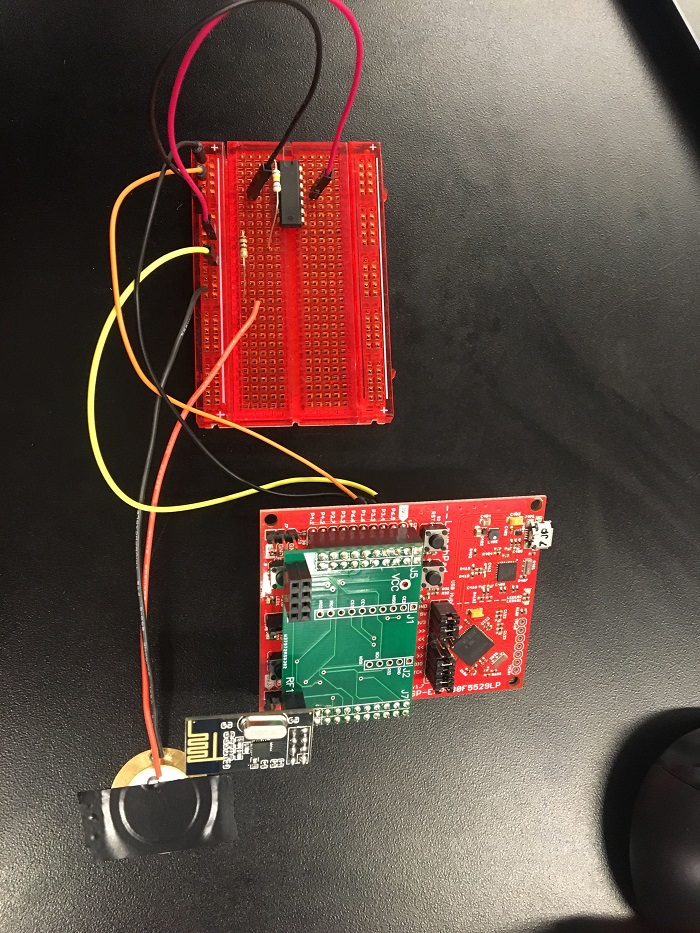
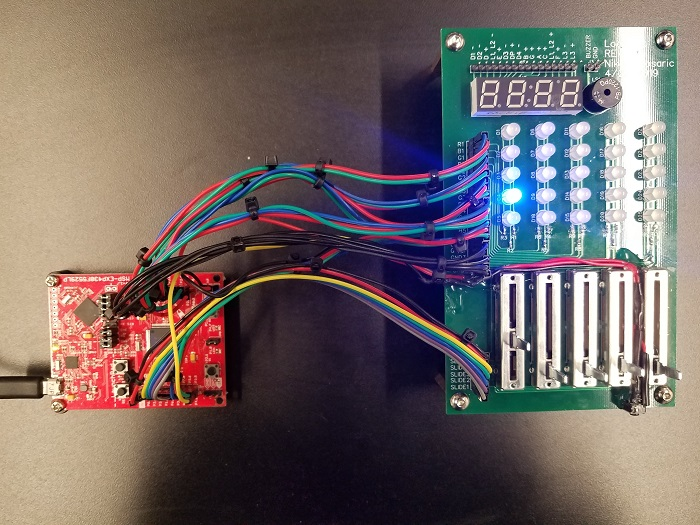

|
Muhlbaier's Favorite Clinic
|
|
Muhlbaier's Favorite Clinic
|
The main goal was to learn how to develop embedded software to be used in a class final project of a thief simulator game. This game is a series of networked traps that must all be completed to get a score. The lower the score, the better the player did. Each group worked on a set of traps for the system. This group worked on the following traps:
The traps communicated with each other over an nRF24 network, where the brainframe node utilized all the messages, and each group had a branch and leafs. This allowed for all the nodes to communicate with the brainframe and provide and receive a variety of messages. The brainframe sent an arm message to each node, telling the node that it was to be activated. Each node then sent out a penalty each time the trap was tripped, increasing the individuals score. Once all the traps were completed, the nodes were automatically disarmed and the score was displayed. The lower the score the better. The score is a representation of the time it took to complete the thief simulation, so a shorter time is desired for a better run.
All traps can be activated by calling their init() functions. Before this the SPI must be configured, along with callback functions that provide control of the chip enable and chip select not pins on the nRF used. After that point the trap takes control of the system and handles the various events like arming, disarming, access, and trip. All traps worked, however due to network issues, not all traps across all teams were able to reliably connect, so the laser tripwires trap was selected to be the trap to represent our group.
The lockpick module implements a virtual lockpick by using a slide potentiometer to mimic movement of a tumbler and a 5x5 RGB LED matrix to display the position of the virtual tumbler. Each column of the matrix represents a tumbler. The user slides the potentiometer, mimicking the position of the tumbler. This position is shown on the RGB matrix as a red LED. The position at which the tumbler unlocks is shown as a blue LED. Once the user moves the tumbler to a position within plus or minus the error, the LED turns green and the tumbler is then incremented. Once all five tumblers have been solved, the lock is disarmed. The error value is set by the difficulty of the trap.
This trap acts as a minefield trap. The piezo sensor is a transducer that produces a signal when it senses vibrations. The ADC module is used to read the analog input from the piezo and determine how strong the vibrations are.
This trap acts as a laser grid protecting a “valuable” object at the back of the trap. The sensors are periodically checked at a period of 10ms to see if the lasers are tripped. The laser in the back is also checked for continuity to see if the object was removed. If a laser is tripped, a score multiplier sent from the master node is used to determine the penalty for breaking a laser and that laser will be turned off so it won’t be tripped again. If the object is removed, no matter how many lasers were tripped along the way, the trap will be disarmed so the thief can “safely” move on to the next trap. The laser emitters use a mosfet setup so that they can be individually turned off by pins on the MSP430F5529. This works by sending a signal to the gate of the mosfet and if that value is high, the laser will be on, otherwise it will remain off. There are also indicator LEDs to let the thief know how many lasers remain untripped. The laser receivers send an analog voltage when they detect the laser from the emitter. This analog value is then converted into a digital value by using internal pullup resistors on the input pins of the MSP430F5529.
Additionally, a buzzer control module was written to provide audio feedback from traps. The module utilizes the task manager and timing module in order to make a buzzer produce a sound at a determined frequency. The timing module is used to control the frequency of the sound produced and the task module is used to control the length of time the buzzer will sound.
Upon demo, all nodes attempted connection to the network. While the brainframe node was reliable, tall branches and leafs had connectivity issues. If a branch had any network connectivity issues, the leafs were unable to connect to brainframe node. This meant that the branch had to be reliable in its connection. To avoid this, traps connected during the demo were set as the branch, reducing points of error.
Excluding the network, the traps worked flawlessly. All the traps were able to arm, provide a score, provide a disarm, and worked as desired. The lockpick trap was unable to connect to the network, due to a change in what SPI channel it was using.
Overall it can be concluded that the traps would have a higher reliability if the network was tested prior to the demo.
Laser tripwires showing the 5 lasers used in the trap and the 5 status LEDs connected to the MSP430.
Piezo trap showing the piezo element, the operational amplifier used to increase the signal, and the connection to the MSP430.
Lockpick trap with the sliders used to pick the lock and the RGB LED matrix used to display the state of the trap.
Throughout the project, Slack, and Github were both used to ensure ease of communication and integration. Slack was utilized instead of emails to ensure that everyone had an easy means of communication with one another and the entire group was able to be aware of all that was going on. Slack also helped coordinate times for the group to meet up and work together. Slack was also utilized to communicate project goals between different traps and modules and also communicating directly with Professor Muhlbaier.
Github was utilized so that every member was able to work on code together. The group was able to work together on the buzzer module together by making changes and pushing changes. The group was able to work on the different portions of the module, while using slack to communicate, and thus complete and test the buzzer module much quicker than if the group were to work on the code one at a time.
Throughout the entirety of the class, Trello was utilized as a means of tracking every task within a sprint. This was extremely valuable as it allowed the group to visualize the tasks that need to be completed, the tasks that in progress, and the tasks that have been completed. It also allowed the scrum master to easily see who still had tasks to complete so that they can be reminded that it needs to be completed.
 1.8.15
1.8.15